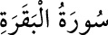

2- BAKARA SÛRESİ
Medine’de inmiştir. 286 âyettir. Kur’an’ın en uzun sûresidir. Adını 67-71.
âyetlerde yahûdilere kesmeleri emredilen sığırdan alır. Yalnız 281. âyeti Vedâ
Haccı’nda Mekke’de inmiştir. İnanca, ahlâka ve hayat nizâmına dâir hükümlerin
önemli bir kısmı bu sûrede yer almıştır.